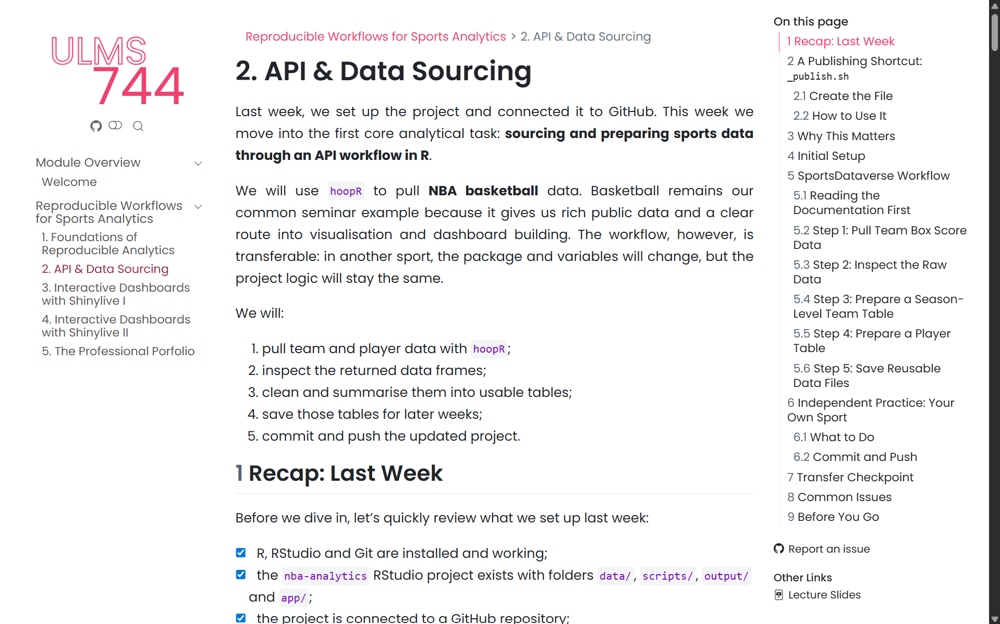
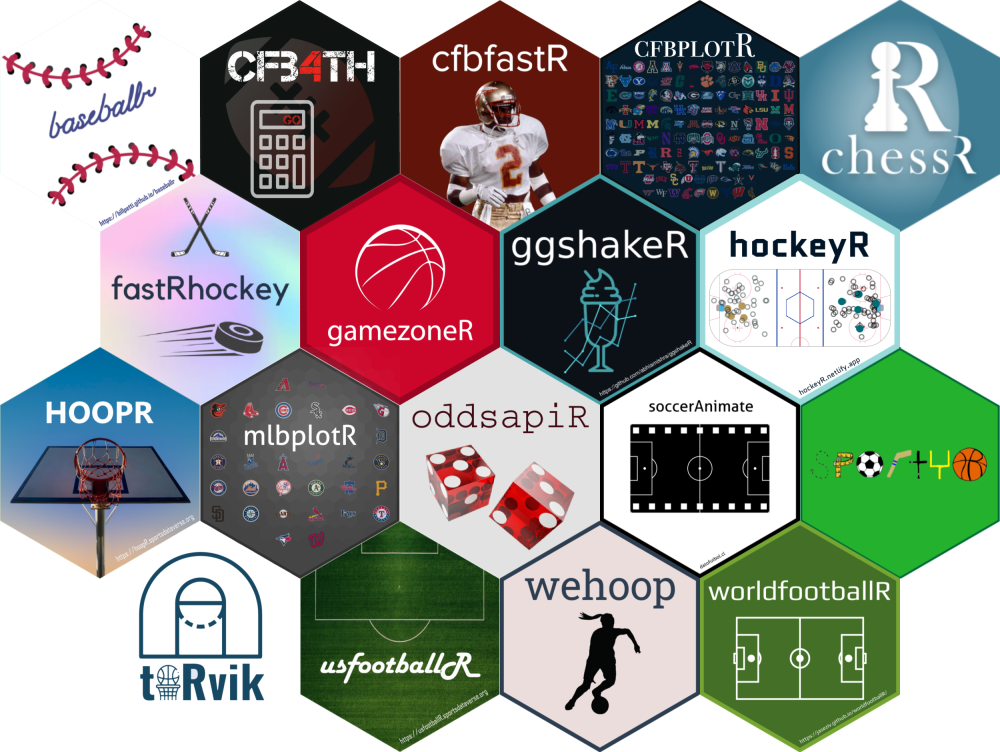
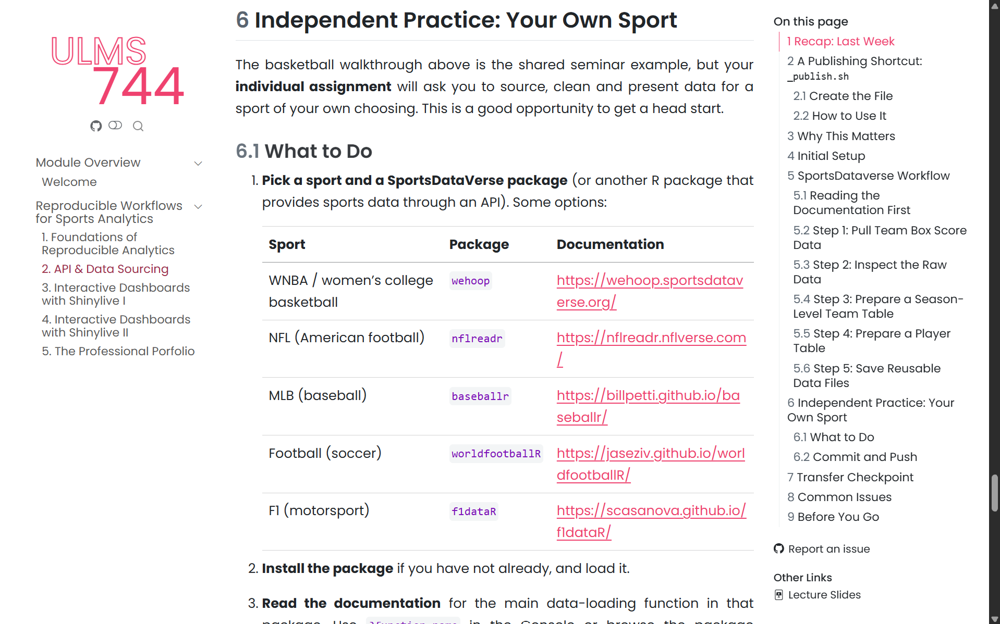

Week 8 Lecture
Dr Shunya Kimura
skimura@liverpool.ac.uk
Sports Analytics in Practice
API & Data Sourcing

Module Outline
W7
Foundations of Reproducible Analytics
W8
API & Data Sourcing
W9
Interactive Dashboards with Shinylive I
W10
Interactive Dashboards with Shinylive II
W11
The Professional Portfolio
Last Week
- Installed the package stack for this block.
- Created an RStudio project with a clean folder structure.
- Connected the project to GitHub.
- Made and pushed a first commit.
Quick Recap
Go To Workbook…

This Week
Our Plan
- Understand what an API is and why it matters.
- Use the
hoopRpackage to pull NBA data. - Inspect, clean and summarise raw data.
- Save prepared datasets for later weeks.
What Is an API?
The Short Answer
- API stands for Application Programming Interface.
- It is a structured way for one piece of software to request data from another.
- Instead of downloading a file manually, your R script asks a server to send the data directly.
Why Analysts Care
- Manual downloads are not reproducible. You cannot re-run them automatically.
- APIs give you a programmatic, repeatable path to fresh data.
- Most modern sports data platforms expose their data through APIs.
The Mental Model
1. Your R script calls a function
↓
2. The function sends an API request
↓
3. The server returns the data
↓
4. You get a data frame in R
Everyday Analogies
- A weather app on your phone uses an API to get forecast data.
- When you search for flights, the site queries airline APIs behind the scenes.
- APIs are just structured conversations between machines.
SportsDataVerse
What Is It?
https://r.sportsdataverse.org/
- SportsDataVerse is a collection of open-source R and Python packages for accessing sports data.
- Each package wraps an API for a specific sport or data source.
- The API calls are hidden behind simple R functions.
Key Packages

R Packages in the SportDataverse
hoopR
NBA and men's college basketball
wehoop
WNBA and women's college basketball
nflverse
NFL play-by-play and roster data
baseballr
MLB Statcast and FanGraphs data
worldfootballR
Football (soccer) data from FBref, Transfermarkt, etc.
Why hoopR?
https://hoopr.sportsdataverse.org/
- Rich, publicly available NBA data with no authentication required.
- Clean R functions that return ready-to-use data frames.
- The workflow pattern transfers to any sport — only the package and column names change.
Reading the Documentation
The Documentation Habit
- Before you call a function, read its documentation.
- The documentation tells you:
- what data sources are accessible;
- what functions exist to call them;
- what parameters (inputs) each function accepts;
- what kind of data it returns.
Start with the Package Website
- Every SportsDataVerse package has a documentation website.
- It gives you the big picture: what data is available, what functions to use, and how to get started.
- For hoopR: https://hoopr.sportsdataverse.org/articles/getting-started-hoopR.html
Then Check Individual Functions in R
- Once you know which function you want, use
?in the RStudio Console:
- The help page shows the Usage, Arguments and Value sections.
- Arguments = the parameters you can set when calling the function.
- Value = what the function gives back (usually a data frame).
What You Learn from the Docs
load_nba_team_box()has one key parameter:seasons.seasonsaccepts a numeric vector — you can request one season or several.- The function returns a data frame with one row per team per game.
- Knowing this before you run the code saves trial and error.
The Same Pattern, Different Sport
- For football, the
worldfootballRpackage works the same way. - Start with the Transfermarkt documentation: https://jaseziv.github.io/worldfootballR/articles/extract-transfermarkt-data.html
- Then check individual functions in R with
?tm_player_market_values. - You would discover parameters like
country_name,start_yearandleague_url. - The documentation tells you which values are valid for each parameter.
General Workflow
1. Browse the package website — what data & functions are available?
↓
2. Check
?function_name in R — read the Arguments
↓
3. Choose your parameter values (e.g. season, league)
↓
4. Call the function and inspect the result
Good Practice in Data-Sourcing
Pull → Inspect → Summarise → Save
- This is the core data-sourcing habit for the module.
- It applies to any sport and any data package.
Step 1: Pull
- Load your packages and call the data-sourcing function.
- Use the parameters you identified from the documentation.
- The result is a data frame — typically one row per event, match, or game.
Step 2: Inspect
- Before doing anything else, check what you received.
- You can also click the data frame in the Environment panel to browse it visually.
- Never summarise before you have inspected.
Step 3: Summarise
- Filter the data to the subset you need (e.g. regular season, a specific league).
- Use
group_by()to split by team, player, driver, etc. - Use
summarise()to collapse each group into one row of aggregated statistics. - Use
mutate()to create new columns from the summary (e.g. win percentage). - Choose the variables that matter for your sport and your analysis.
Step 4: Save
- Save your prepared data so you do not need to re-run API calls every time.
.rdspreserves R objects exactly (column types, factor levels, everything)..csvis universal and can be opened in Excel, Python, or any other tool.- Use both:
.rdsfor your own workflow,.csvfor sharing.
Applying This Workflow
The Pattern Is Transferable
- The specific functions and column names change from sport to sport.
- The workflow does not:
- Read the documentation.
- Choose your parameters.
- Pull → Inspect → Summarise → Save.
- For your assignment, you will do exactly this with a sport of your choosing.
Version Control
Save and Publish Your Work
- After each meaningful piece of work, commit and push.
- Use
_publish.shto do it in one step:
- Write a commit message that describes what you did, not just “update”.
Homework
Go To Workbook…

Questions?
Shunya Kimura
s.kimura@liverpool.ac.uk